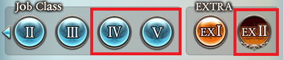
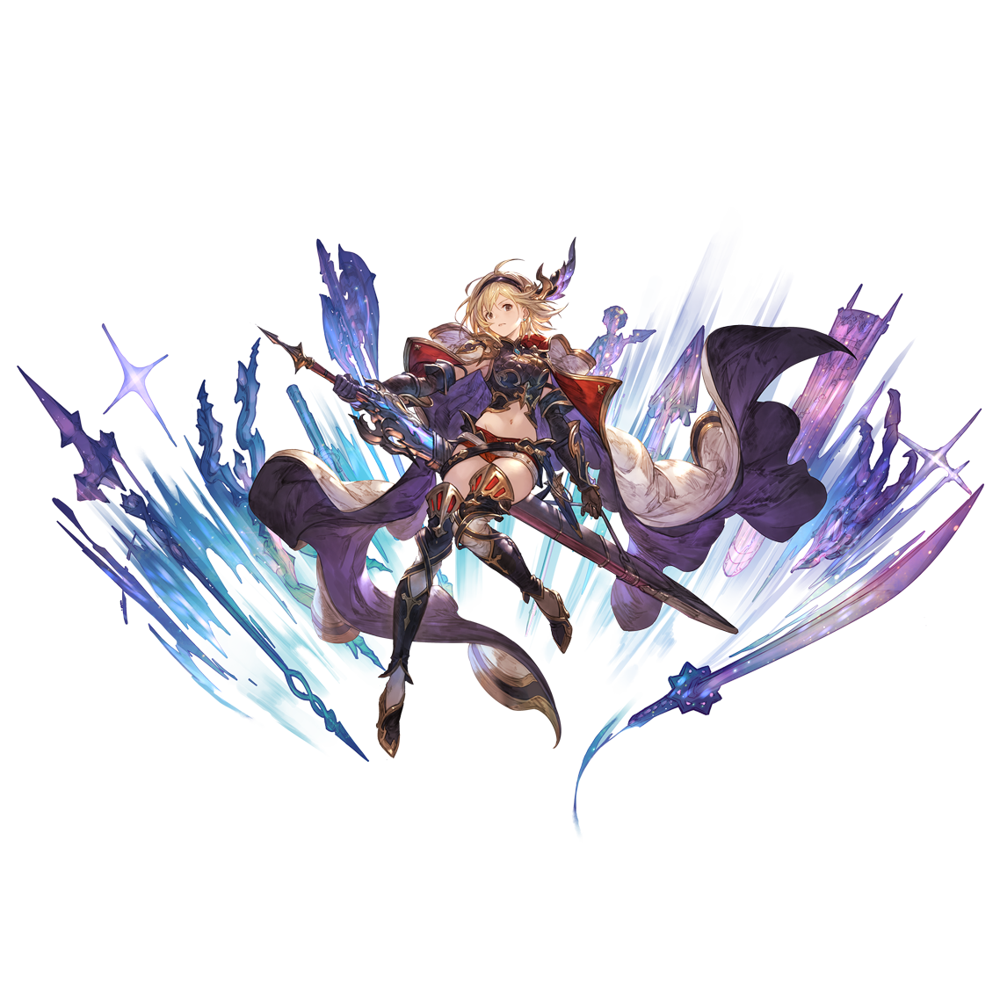
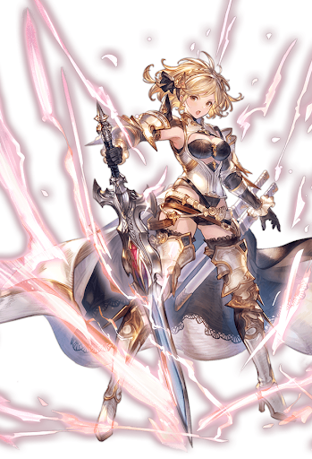
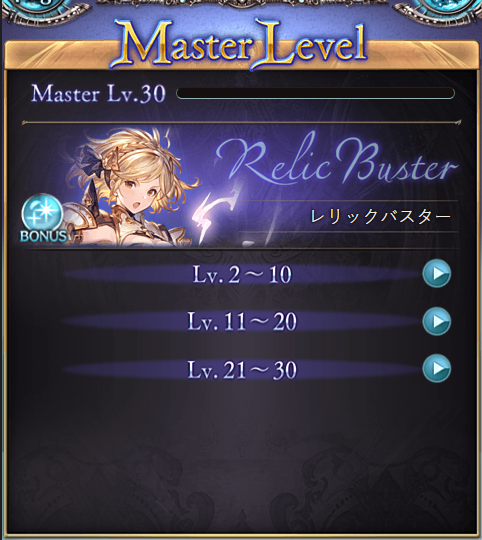

進階職業
GBF中的上級職業主要是C4、C5以及EX2的職業，職業解放一般需要該職業對應的稱號、JP及職業証


EX2職業
先從EX2職業解鎖對後續C4職業解鎖比較方便。EX2職業稱號只能透過製作職武開放。
解鎖流程:
1.對應的EX職業滿等
2.去商店>特殊武器強化>職業專用武器製作>兌換對應的職業武器模板(能兌換的只有4把，因此推薦使用玉鋼突破)
3.將職業武器製作強化至轉換屬性步驟
4.轉屬後打對應職業的前置關卡，可從該職業中導向至關卡，過關後獲取稱號
5.花費對應的JP及職業証(用榮譽換比較省事，沒有榮譽的話要去打煩人的共鬥關卡)即可解鎖

C4職業
因為"受け継がれる意思"開放條件是任意一把職業武器製作至轉屬，因此先解鎖EX2後C4職業的開放會容易很多。
解鎖流程:
1.使用對應的職業去挑戰"受け継がれる意思"，過關後獲取稱號
2.獲取稱號後花費JP及對應的職業証即可解鎖
C4的例外職業
2020年開始新實裝沒有下位職業的C4職業，因此這些職業只能通過該對應的兩個職業來獲取稱號。
目前例外的職業有
羅賓漢、武僧、伐木公、騎兵
機神
機神雖然也是C4職業但可透過道具兌換直接獲得。

C5職業
2022年3月24日實裝的C5職業，目前只有兩個:維京人、帕拉丁
解鎖流程:
1.對應的職業Master等級滿等
2.對應的職業任務通關
3.花費JP即可解鎖
Master等級
2021年12月14日實裝的系統，當職業等級滿等之後獲得的經驗值會提升該職業(只有C4及EX2職業)的Master等級
每個職業的Master等級加成效果都不同，原則上
每升1等會有對應的屬性上升
10等時獲得該職業的顏色SKIN
20等時習得該職業的新被動
30等時該職業的一技能強化